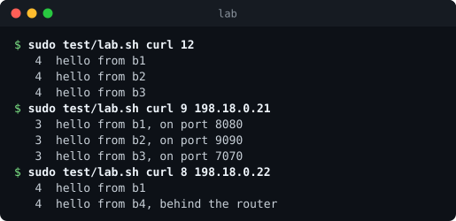

theLB
A load balancer for Linux in one small program. Your machines share a virtual IP address, the Linux kernel spreads the traffic over your servers, and the address moves by itself when a machine fails.
What is theLB?#
theLB - The Load Balancer - lets a group of Linux machines share one address, a virtual IP (VIP). Clients send their traffic to the VIP. theLB hands each new connection to one of your servers, and the server answers the client directly. When a machine fails, another one takes the VIP over within seconds.
You run the same program, thelb, on every machine. You do not need to know ipvsadm, sysctl, iptables or ARP: theLB sets all of that up, checks it, and removes it when it stops.
How it works#
- The client connects to the VIP. The VIP lives on one machine, the leading director.
- The director's kernel (its built-in load balancer, IPVS) picks a healthy backend and passes the packet on. It does not change the packet's addresses.
- The backend answers the client directly, from the VIP's address. Replies never pass back through the director, so one director can carry a lot of traffic.
There are two roles:
- Directors receive the traffic and decide where it goes. They form a cluster (with Raft). One of them, the leader, holds the VIPs. One director is enough to start; three are recommended, so that one can fail.
- Backends run your applications - a web server, an API, a DNS server. Each backend offers its applications to the cluster. A director assigns them to services.
See it work#
The summary of a lab cluster - three directors, four backends, three services:

thelb status on a director: the cluster, and how many of each thing are up.As text
$ sudo thelb status
cluster | id | created | leader | term | leader since | vip lease
---------+----------+---------------------+--------+------+---------------------+-----------
lab | ac7940f8 | 2026-11-15 20:53:47 | d1 | 2 | 2026-11-15 20:53:48 | 6s
what | total | up | down | pending
-----------+-------+----+------+---------
directors | 3 | 3 | 0 | 0
backends | 4 | 4 | 0 | 0
services | 3 | 3 | 0 | -
vips | 4 | 4 | 0 | -
More: thelb status directors | backends | vips | allThe client fetches the web service twelve times. Three backends share the work:

As text
$ sudo test/lab.sh curl 12
4 hello from b1
4 hello from b2
4 hello from b3
$ sudo test/lab.sh curl 9 198.18.0.21
3 hello from b1, on port 8080
3 hello from b2, on port 9090
3 hello from b3, on port 7070
$ sudo test/lab.sh curl 8 198.18.0.22
4 hello from b1
4 hello from b4, behind the routerWhy people use it#
- The kernel does the forwarding. theLB programs IPVS, which is part of Linux. There is no proxy in the path, and no address translation: your application sees the client's real address.
- It survives failures. If the leader crashes, another director takes the VIP. Open connections keep going, because the directors share their connection tables.
- It never takes a VIP that is still in use. The VIP is leased from the kernel: if theLB is killed, its kernel removes the VIP a few seconds later. A new leader takes the VIP only after it checks, twice, that no machine still answers for it. See Directors and failover.
- Health checks from both sides. A backend checks its own application, and the directors check it too. A backend gets traffic only while both checks pass.
- Nothing left behind. theLB changes only the running system. It writes no configuration file, and removes everything when it stops. To make a setup survive a reboot, it prints what you need - a systemd unit, kernel settings - for you to install.
- It tells you what is wrong. Before it changes anything, theLB checks that it can do its whole job. If it cannot, it says exactly what is missing.
thelb doctorchecks a machine and tells you what to fix.
Where to go next#
thelb doctor.
CommandsEvery command and flag.
Status#
theLB 0.1.0-alpha.3 is the first release. It runs on Linux only (amd64, arm64 and 32-bit arm), and serves Kubernetes Services of type LoadBalancer. See the changelog for what each release changed.